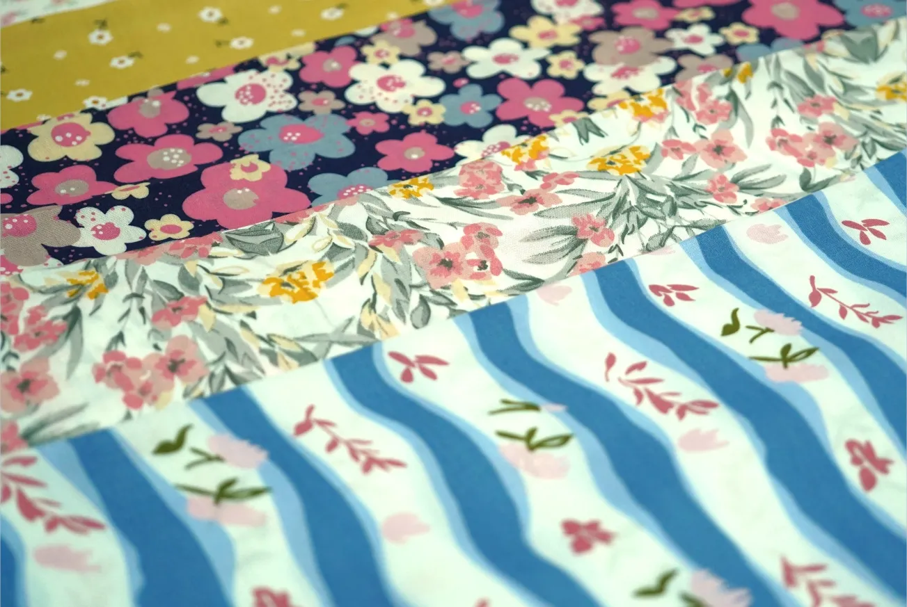

Lebih dari Sekadar Kain: Beragam Produk dari Textile Printing
Ketika mendengar istilah textile printing, mungkin yang pertama terbayang adalah selembar kain dengan motif tertentu.
Padahal, kain hasil printing dapat digunakan untuk berbagai kebutuhan dan dikembangkan menjadi beragam produk.
Di PT Kusuma Kencana Mulya, proses produksi telah menghasilkan berbagai jenis produk tekstil, mulai dari kain bermotif hingga produk jadi seperti sarung, selendang, sprei, sarung bantal dan guling, serta taplak meja.
Kain untuk Berbagai Kebutuhan
Setiap produk memiliki kebutuhan yang berbeda.
Kain untuk pakaian tentu memiliki pertimbangan yang berbeda dengan kain untuk sarung. Begitu pula dengan material untuk sprei, selendang, maupun produk tekstil lainnya.
Perbedaan tersebut membuat pemilihan bahan, motif, warna, dan proses produksi menjadi bagian penting dalam menghasilkan produk yang sesuai.
Motif yang Menjadi Karakter Produk
Motif bukan hanya menjadi elemen visual.
Pada produk tekstil, motif dapat menjadi bagian dari identitas sebuah produk. Batik tradisional, motif modern, hingga desain yang dibuat berdasarkan kebutuhan tertentu dapat memberikan karakter yang berbeda pada kain.
Karena itu, proses pengembangan motif menjadi salah satu bagian penting dalam perjalanan sebuah kain.
Dari Kebutuhan Menjadi Produk
Sebuah produk tekstil tidak selalu dimulai dari bentuk produk akhirnya.
Sering kali, proses dimulai dari kebutuhan: bahan seperti apa yang diperlukan, motif seperti apa yang sesuai, bagaimana warna akan diterapkan, dan proses produksi seperti apa yang dibutuhkan.
Dari berbagai pertimbangan tersebut, sebuah kain kemudian diproses hingga dapat digunakan untuk kebutuhan yang lebih spesifik.
Setiap Produk Memiliki Cerita
Tidak ada satu jenis kain yang cocok untuk semua kebutuhan.
Setiap produk memiliki karakter dan proses yang berbeda. Karena itu, memahami kebutuhan sejak awal menjadi bagian penting dalam menentukan bahan dan proses produksi.
Bagi KKM, textile printing bukan hanya tentang menghasilkan kain bermotif.
Lebih dari itu, prosesnya adalah bagaimana sebuah bahan, desain, warna, dan teknologi dapat dipadukan untuk menghasilkan produk yang sesuai dengan kebutuhan.